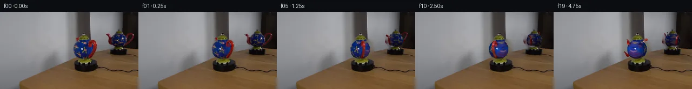

![首帧]()

Round 00
2026-11-05T12:49:37.353153+00:00像素候选变化代码 +294/−0inspection 更新
pixels 0b6195daa79ea624 · code 60439c532e098b5b
查看本轮 generate.py 真实 diff
--- previous/generate.py
+++ current/generate.py
@@ -0,0 +1,294 @@
+"""Local photographic texture projection and a small NumPy triangle rasterizer.
+No external renderer, learned model, network, or additional scene input is used.
+"""
+from pathlib import Path
+import math
+import numpy as np
+from PIL import Image, ImageDraw, ImageFilter
+from scipy import ndimage, sparse
+from scipy.sparse.linalg import spsolve
+from artifact_io import save
+
+ROOT = Path(__file__).resolve().parent
+S = 4
+W, H = 256, 144
+PHOTO = np.asarray(Image.open(ROOT / 'first_frame.png').convert('RGB'), dtype=np.float64)
+PHOTO_HI = np.asarray(Image.fromarray(PHOTO.astype(np.uint8)).resize((W*S,H*S), Image.Resampling.BICUBIC), dtype=np.float64)
+ELEV = math.radians(12)
+CE, SE = math.cos(ELEV), math.sin(ELEV)
+LIGHT = np.array([-.48,.60,.64]); LIGHT /= np.linalg.norm(LIGHT)
+
+
+def polygon(points, high=False):
+ scale = S if high else 1
+ im=Image.new('L',(W*scale,H*scale)); d=ImageDraw.Draw(im)
+ d.polygon([(round(x*scale),round(y*scale)) for x,y in points],fill=255)
+ return np.asarray(im,dtype=np.float64)/255
+
+
+def sample(im, x, y):
+ coords=[np.asarray(y),np.asarray(x)]
+ if im.ndim==2: return ndimage.map_coordinates(im,coords,order=1,mode='nearest')
+ return np.stack([ndimage.map_coordinates(im[:,:,c],coords,order=1,mode='nearest') for c in range(3)],axis=-1)
+
+
+def nearest_fill(im, valid):
+ ids=ndimage.distance_transform_edt(~valid,return_distances=False,return_indices=True)
+ return im[ids[0],ids[1]]
+
+
+def harmonic_background(photo, mask):
+ unknown=np.argwhere(mask)
+ ids=np.full(mask.shape,-1,dtype=int); ids[mask]=np.arange(len(unknown))
+ rr=[];cc=[];vv=[];rhs=np.zeros((len(unknown),3))
+ for i,(y,x) in enumerate(unknown):
+ rr.append(i);cc.append(i);vv.append(4.)
+ for dy,dx in ((0,1),(0,-1),(1,0),(-1,0)):
+ yy,xx=y+dy,x+dx
+ if mask[yy,xx]: rr.append(i);cc.append(ids[yy,xx]);vv.append(-1.)
+ else: rhs[i]+=photo[yy,xx]
+ a=sparse.csr_matrix((vv,(rr,cc)),shape=(len(unknown),len(unknown)))
+ out=photo.copy();out[mask]=spsolve(a,rhs)
+ return out
+
+
+MAIN = dict(cx=154.5,cy=69.7,rx=17.6,ry=18.5,phase=48.,speed=1.,
+ body=[(147,53),(160,53),(165,55),(169,59),(172,65),(172,74),(169,81),(164,85),(159,87),(148,87),(142,84),(138,79),(136.5,73),(136.5,66),(139,60),(143,56)],
+ erase=[(146,51),(161,51),(165,52),(168,51),(175,51),(179,57),(181,65),(178,76),(174,83),(166,89),(147,90),(140,85),(135,76),(135,64),(140,56),(139,48),(145,47)],
+ lid=[(146,54),(146,49),(149,45),(153,44),(152,40),(157,39),(157,44),(161,45),(165,49),(166,54)],
+ foot=[(146,88),(160,86),(165,88),(169,94),(163,97),(145,96),(144,92)],
+ handle=[(166,62.3),(166.2,57.5),(169.6,54.5),(173.3,55.3),(176.4,59),(176.7,65.2),(174.3,72.6),(170.5,79.5),(165.7,84.0)],
+ hr=2.45,
+ spout=[(145.5,68),(145.8,62),(146,56),(144,51.5),(141.3,49.6)],
+ sr=[3.1,2.65,2.1,1.9,2.2],
+ redbox=(160,50,181,89), spoutbox=(138,46,148,68),
+ spec=(151.0,69.0))
+REF = dict(cx=220.0,cy=53.7,rx=14.,ry=14.6,phase=-8.,speed=-1.,
+ body=[(211,41),(224,41),(230,44),(233,48),(234,54),(232,60),(228,65),(223,68),(215,67),(210,64),(207,59),(206,52),(208,46)],
+ erase=[(212,40),(225,39),(233,43),(239,39),(246,39),(249,42),(248,48),(244,54),(238,60),(231,66),(225,70),(212,69),(206,64),(203,57),(201,49),(196,43),(196,40),(201,40),(206,45)],
+ lid=[(210,42),(211,38),(215,36),(217,35),(218,33),(221,33),(222,36),(226,37),(229,41),(228,43)],
+ foot=[(212,67),(225,66),(229,70),(231,74),(212,74),(209,71)],
+ handle=[(232,48),(234,44.4),(238.8,41.4),(243,41.2),(246,43),(245.1,47.5),(241.1,53.2),(236,58.9),(231.4,63.1)],
+ hr=1.20,
+ spout=[(208,58.1),(205.8,54.8),(204.7,48.7),(202.2,43.9),(198.6,42.2)],
+ sr=[2.25,2.2,1.7,1.6,1.8],
+ redbox=(230,38,249,65),spoutbox=(195,39,212,62), spec=(220.3,51.6))
+POTS = [MAIN,REF]
+
+
+def create_texture(p):
+ mask=polygon(p['body'])>.5
+ # The red handle occludes blue ceramic in the photograph. Fill those
+ # texture texels from the nearest observed ceramic, never from the wall.
+ r,g,b=PHOTO[:,:,0],PHOTO[:,:,1],PHOTO[:,:,2]
+ red=(r>g*1.38)&(r>b*1.22)&(r>45)
+ good=mask & ~red
+ filled=nearest_fill(PHOTO,good)
+ # Keep bright specular reflections in camera space rather than rotating
… diff truncated; 207 more lines …